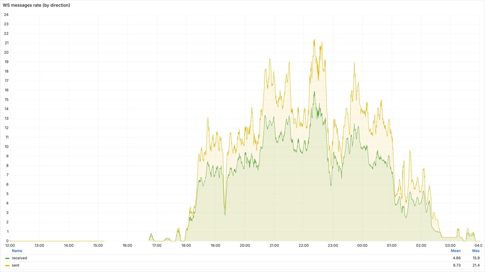
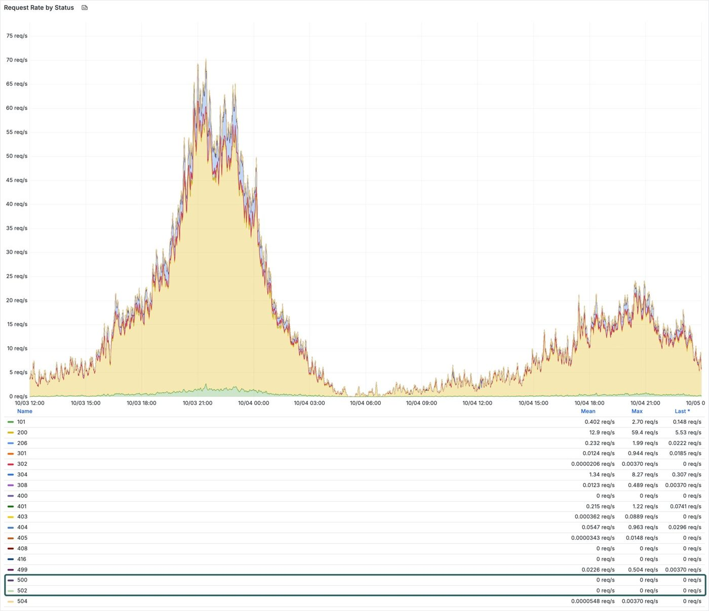

Manaraga → PARTYstation
Migrating PARTYstation: 300K lines of legacy, coding agents and zero downtime
A platform for party games: the game runs on a TV, players join from their phones. We moved it to a new stack and built a harness in which it is now developed with agents. I was the tech lead.
2026 · Project yearResponsibilities
-
Architecture
The target system: one Python codebase for three products, CI/CD, a stand for every branch, observability.
-
Harness
An environment where agents write code well: context in the repository, tests, rules, subagents and AI review gates.
-
Team management
Roadmaps and breaking the work into tasks that agents do in parallel. A process in which each engineer runs several agents at once. Finding the next bottleneck and removing it.
-
Customer delivery
Constant contact with the founder and the customer’s team: regular meetings, interviews with their backend developer and QA, weekly status against the roadmap, acceptance, the switchover and support after it.
The task: renew the system so the customer can develop it without us
The customer decided to develop the product with a few engineers and agents, without a separate development team. So rewriting the system was not enough: they needed an environment in which agents write good code, handed over together with the system.
| Before | After | |
|---|---|---|
| Knowledge | little written down, and outdated | architecture, decision history and known defects in the repo |
| Code | several services in PHP and Node.js | one Python codebase |
| Tests | almost none | about 6,500 on API, WebSocket and UI |
| Releases | by hand over SSH | each product has its own release cycle: tagged releases through CI/CD |
| Rules | none for agents | skills, rules, subagents and hooks for the project |
Legacy parity: the same tests for the old system and the new one
The old system had no specification. We studied various existing approaches to such migrations, including repo-task-proof-loop, and arrived at a simple principle we called legacy parity: write tests around the old system until they go green, then write the new version until the same tests pass.
I proposed the order: first move behaviour one to one, change the architecture later and in pieces. Even awkward contracts, such as error codes that differ from module to module, were repeated as they were, and agents’ “improvements” were reverted.
Our QA engineer and the customer’s team wrote a coverage map of about 1,500 user scenarios split into 19 domains. Tests were written from it on three levels: unit, API and UI.
Along the way we found about 350 defects in the old system. We fixed right away only those where the risk of breaking something was below a threshold agreed with the customer. The rest were described: how to reproduce, what was expected, what happens and why the behaviour was kept. The whole registry went to the customer.
- ~350
- legacy defects found and described
- 1 week
- of acceptance by the customer
The archaeologist subagent
The first module, authentication, became a single PR of ten thousand lines: the harness itself was built around it. It also showed a trap: after a day of reading PHP, the agent started writing Python in the style of the old framework. Since then the main agent doesn’t read old code. It asks a read-only subagent, which returns a summary: what the code does, with line references and every side effect.
How to eat an elephant: cutting a legacy monolith into pieces
Agents work in parallel only when tasks are small and independent. In a monolith everything is tied to everything, so first we moved what the rest stands on, and then cut by domain, module and task, each task sized for one agent in a clean context. Domains went at the same time. When the scope grew to a full migration, I first built a complete roadmap with person-day estimates and discussed deadlines and resources only on its basis. We went through its status with the customer every week, including what didn’t fit.
one task: one agent in a clean context
A tight deadline: how to speed development up three to four times
When every engineer runs three or four agents at once, everything around the code becomes the slow part. We removed bottlenecks one at a time.
| Bottleneck | What we did |
|---|---|
| Tests on a laptop: e2e load the machine, several branches can’t run side by side | A stand for every branch in Kubernetes, with its own database from a reference snapshot. Tests run inside the cluster and are started by a PR comment. |
| UI tests take long to write and don’t split well between agents | Broad API test coverage first. UI tests don’t block merges: they catch up, and we fix what they find. |
| No checks you can trust a merge to without a person | A CI with types, linters, unit, API and UI tests. Separately, load tests for the game server and the API, built on the previous contractors’ work. |
| People can’t review the flow of PRs | Two AI gates. The first is local: a separate reviewer subagent goes round with the coding agent until the comments run out. The second runs in the cloud on the open PR. Each round finds something. At peak hours we dropped human review completely: there was no other way through. |
| With that many checks on every PR, CI becomes a queue | Checks only for the affected code, none on drafts, twice as many CI nodes. |
- 34
- 93
- 115
- 126
Dashed line: the old system’s record, 28 in its busiest week in four years. A typical week before was about 8. Migration weeks are from Manaraga’s case study, October is from the repository history.
Without a feature freeze
The customer’s team kept shipping into the old system the whole time, and we ported their changes right behind. In early August a batch of features that weren’t yet in the reference landed in the new code at once, and parity broke. I proposed to management not to start new features until parity was closed with tests and production was stable; the customer’s side updated the reference and the affected tests, and the first new feature started after the switchover.
Switching traffic in one evening
On our stand the REST API moved over in groups of endpoints, and one line in the routing could send a group back. The game server keeps live rooms in memory, so it was replaced in one step. Production switched over on 31 August 2026 in one evening: we prepared the new side in strict order, switched the traffic and watched the rollout. The order mattered because billing jobs charge money as soon as they start.
Traffic moved to the new game server

Observability for people and agents
Together with the harness we built observability on Prometheus and Grafana: metrics, logs and traces. People look at dashboards, agents read the same data from the terminal. So an agent runs a release on its own: rolls it out, watches the rollout, runs smoke tests on production and checks the metrics.
A weekend on production without backend errors

After the switchover: product rails
Parity was a migration tool: after the switchover, production itself became the reference. In September the harness was rebuilt for product work, and the customer’s team now ships features on it on their own. Every feature goes through three steps.
The rails were tested in practice. In October the customer added new kinds of games to the platform on their own: scenario party games for a group and arcades where the phone works as a gamepad. These change the design of the system itself: a new content type, a game engine, a new stream between phone and TV. The customer built them on their own stand and handed them over as ready PRs, each behind its own feature flag: 52 PRs and about 135,000 lines. We were in a support role: reviewing, advising, tuning here and there. The queue went down to zero in ten days.
Three products from one codebase
The old platform had a separate copy for online cinemas: at the end of 2023 the whole system was copied for partners, and in two and a half years the copies drifted apart.
fix in both copies fix forgotten in the copy
Alongside the migration we designed how to build the cinemas from the same codebase: the difference between products lives in the deployment profile. There was effectively no English version. The customer asked for one on separate infrastructure, and on the new stack it became the third profile.
- Russian
- full set of modules
- payments, phone sign-in
- sign-in through the partner
- some modules turned off
- English, by domain
- Google sign-in
- separate infrastructure
The scope was agreed in September, and in October the English version was already taking production traffic. The founder of PARTYstation presented it at a pitch in Shanghai.
Where we chose the simpler option
A complex option has to pay for itself. Where it didn’t, we kept the simple one.
| Could have | What we did | Why |
|---|---|---|
| Keep a separate service for statistics | Merged it into the main API | A separate database is enough to isolate the data. A separate service only added links between services. |
| Move every connected integration | Moved only the ones in use | For each of the others we wrote down why it wasn’t moved. |
| Branch → dev → main → tag → deploy | Dropped dev: every merge to main gets a version tag and rolls out to production by itself | The team got smaller while changes reaching production grew by an order of magnitude: from about 8 merged PRs in a typical week to 115 at the peak. A flow like that needs a short path to production, and we convinced the customer to drop the intermediate step. |
Timeline
- Start
Studying the old system, the scenario map, the first module and the harness around it.
- Migration
Everything else by the roadmap, then a week of acceptance.
- Switchover
Live traffic on the new system.
- Product rails
A feature path from spec to code; cinemas on the new stack.
- English version
Launch and the Shanghai pitch. In parallel, production moved after a cloud provider outage.
- Handover
The codebase moved to the customer’s GitLab; the infrastructure was theirs from the start. The flow kept growing: 78 merges in the third week of November.